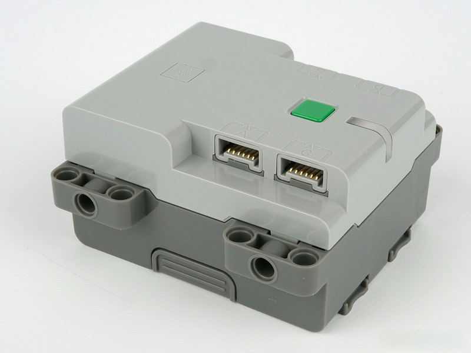

LEGO Powered Up
RemotePoweredUpHub
(io.github.jabrena.juno.remote.lego.poweredup) lets a Juno program remote-control a LEGO Powered Up hub — run
its motors, sensors, battery and status LED — the same way the LEGO apps do. The board acts as a Bluetooth
Low Energy central and the Java API speaks the
LEGO Wireless Protocol 3.0 to the hub.
The board-independent BLE transport is a compiler intrinsic backed by the core's BLE library (ArduinoBLE on the
UNO boards, and the native BLE stack on the ESP32 boards).

Connect to a hub
Create one RemotePoweredUpHub at startup, from the board's Bluetooth LE radio and clock, press the hub's green button
so it advertises, and call connect. It scans for the first hub it finds, for up to the given milliseconds (0 waits
forever). The clock is used for BLE and sensor waits. The hub drops the link when it switches off or goes out of range,
so check isConnected() in long-running loops and connect again. A Technic Hub's built-in sensors (see
Read the sensors) are subscribed on every connect. Only the UNO R4 WiFi, Nano ESP32,
AI Thinker ESP32-CAM and M5Stack Cardputer have getBluetoothLe(); on the UNO R3 the compiler
rejects the call:
import io.github.jabrena.juno.hardware.MCU;
import io.github.jabrena.juno.hardware.serial.BaudRate;
import io.github.jabrena.juno.hardware.serial.Serial;
import io.github.jabrena.juno.remote.lego.poweredup.RemotePoweredUpHub;
import io.github.jabrena.juno.util.Delay;
public final class PoweredUpConnectExample {
public static void main(String[] args) {
Serial.begin(BaudRate.BAUD_115200);
Delay.millis(2000);
RemotePoweredUpHub hub = new RemotePoweredUpHub();
while (true) {
if (!hub.isConnected()) {
if (hub.connect(10_000)) {
Serial.print("connected to hub type ");
Serial.println(hub.hubType()); // TYPE_CITY_HUB, TYPE_TECHNIC_HUB, ...
} else {
Serial.println("no hub found");
}
}
Delay.millis(500);
}
}
}
PoweredUpHubHello is the smallest check that a hub connects: it prints the battery level and waits for the hub again if the link drops. Close the LEGO apps first: a hub accepts one connection at a time.
Set the LED color
The hub's status LED takes a HubColor: OFF, PINK, PURPLE, BLUE, LIGHT_BLUE, CYAN, GREEN, YELLOW,
ORANGE, RED or WHITE. For any other color, setLedRgb(red, green, blue) takes each channel from 0 to 255:
import io.github.jabrena.juno.hardware.serial.BaudRate;
import io.github.jabrena.juno.hardware.serial.Serial;
import io.github.jabrena.juno.remote.lego.poweredup.HubColor;
import io.github.jabrena.juno.remote.lego.poweredup.RemotePoweredUpHub;
import io.github.jabrena.juno.util.Delay;
public final class PoweredUpLedExample {
private static final HubColor[] COLORS = {HubColor.RED, HubColor.GREEN, HubColor.BLUE};
public static void main(String[] args) {
Serial.begin(BaudRate.BAUD_115200);
RemotePoweredUpHub hub = new RemotePoweredUpHub();
while (true) {
if (!hub.isConnected() && !hub.connect(10_000)) {
Serial.println("no hub found");
Delay.millis(1000);
continue;
}
for (HubColor color : COLORS) {
if (!hub.isConnected()) {
break;
}
hub.setLedColor(color);
Delay.millis(1000);
}
hub.setLedRgb(255, 128, 0); // arbitrary RGB orange
Delay.millis(1000);
}
}
}
PoweredUpHubHello connects and then cycles the LED through several colors.
Drive the motors
getMotor(port) returns the motor on PoweredUpPort.A to PoweredUpPort.D. drive(percent) runs it from -100 (full reverse) to
100 (full forward). There are three ways to stop: flt() lets the motor coast, stop() brakes it actively, and
hold() holds it where it is. portDevice(port) tells which motor the hub detected on a port:
import io.github.jabrena.juno.hardware.serial.BaudRate;
import io.github.jabrena.juno.hardware.serial.Serial;
import io.github.jabrena.juno.remote.lego.poweredup.PoweredUpPort;
import io.github.jabrena.juno.remote.lego.poweredup.RemotePoweredUpHub;
import io.github.jabrena.juno.util.Delay;
public final class PoweredUpMotorExample {
public static void main(String[] args) {
Serial.begin(BaudRate.BAUD_115200);
RemotePoweredUpHub hub = new RemotePoweredUpHub();
while (!hub.isConnected() && !hub.connect(10_000)) {
Serial.println("no hub found");
Delay.millis(1000);
}
if (!hub.isConnected() || hub.portDevice(PoweredUpPort.A) == RemotePoweredUpHub.DEVICE_NONE) {
Serial.println("no motor on port A");
return;
}
while (true) {
hub.getMotor(PoweredUpPort.A).drive(50); // half speed forward
Delay.millis(2000);
hub.getMotor(PoweredUpPort.A).drive(-50); // half speed backward
Delay.millis(2000);
hub.getMotor(PoweredUpPort.A).stop(); // brakes; flt() would coast
Delay.millis(1000);
}
}
}
Read the sensors
The Technic Hub (88012) has three built-in motion sensors, each on its own port. getAccelerometer() returns the
acceleration as an Accelerometer, getGyroscope() returns the heading and yaw rate as a Gyroscope, and
getTilt() returns the yaw, pitch and roll angles as a SampleProvider. Each returns the same object on every call,
and connect subscribes them, so a read needs no start-up call. A read returns zero until the hub has reported.
import io.github.jabrena.juno.hardware.serial.BaudRate;
import io.github.jabrena.juno.hardware.serial.Serial;
import io.github.jabrena.juno.remote.lego.poweredup.RemotePoweredUpHub;
import io.github.jabrena.juno.robotics.Accelerometer;
import io.github.jabrena.juno.robotics.Gyroscope;
import io.github.jabrena.juno.robotics.SampleProvider;
import io.github.jabrena.juno.util.Delay;
public final class PoweredUpSensorsExample {
public static void main(String[] args) {
Serial.begin(BaudRate.BAUD_115200);
RemotePoweredUpHub hub = new RemotePoweredUpHub();
Accelerometer accelerometer = hub.getAccelerometer();
Gyroscope gyroscope = hub.getGyroscope();
SampleProvider tilt = hub.getTilt();
float[] sample = new float[3];
while (true) {
if (!hub.isConnected()) {
if (!hub.connect(10_000)) {
Serial.println("no hub found");
Delay.millis(1000);
continue;
}
gyroscope.reset(); // heading zero at the current tilt yaw
}
int heading = gyroscope.getAngle(); // 0..359, clockwise since reset
int xAccel = accelerometer.getXAccel(); // whole m/s^2
tilt.fetchSample(sample, 0);
Serial.print("heading=");
Serial.print(heading);
Serial.print(" x-accel=");
Serial.print(xAccel);
Serial.print(" tilt-yaw=");
Serial.println(sample[0]);
Serial.print("battery mV=");
Serial.println(hub.getBattery().voltageMillivolts());
Delay.millis(500);
}
}
}
The scales come from the community protocol documentation and are not verified on hardware. The
PoweredUpHubSensorModesMonitor
example prints the values so you can check them on your hub. MagicSquarePoweredUpHubWithGyro
uses the Technic Hub's heading to turn a vehicle by angle instead of by a calibrated delay.
Read hub properties and external sensors
The Technic Hub's built-in sensors are BuiltInSensor values, such as BuiltInSensor.TECHNIC_GYRO. They take the same
sensor methods as an external port, but never a motor, so getMotor rejects them at compile time. The hub also exposes its battery percentage, button, signal strength, name, firmware and hardware versions. External
sensors use their protocol-specific mode: subscribe after every reconnect with enableSensor, then poll with
readSensor or readSensorValue while the program is running. For example, a motor's position is available through
the higher-level PoweredUpMotor encoder view:
import io.github.jabrena.juno.hardware.serial.BaudRate;
import io.github.jabrena.juno.hardware.serial.Serial;
import io.github.jabrena.juno.remote.lego.poweredup.PoweredUpPort;
import io.github.jabrena.juno.remote.lego.poweredup.PoweredUpMotor;
import io.github.jabrena.juno.remote.lego.poweredup.RemotePoweredUpHub;
import io.github.jabrena.juno.util.Delay;
public final class PoweredUpPropertiesExample {
public static void main(String[] args) {
Serial.begin(BaudRate.BAUD_115200);
RemotePoweredUpHub hub = new RemotePoweredUpHub();
while (!hub.isConnected() && !hub.connect(10_000)) {
Serial.println("no hub found");
Delay.millis(1000);
}
if (!hub.isConnected()) {
return;
}
PoweredUpMotor motor = hub.getMotor(PoweredUpPort.A);
hub.enableSensor(PoweredUpPort.A, RemotePoweredUpHub.MODE_MOTOR_POSITION);
motor.resetTachoCount();
motor.drive(40);
Delay.millis(2000);
motor.stop();
Serial.print("motor degrees=");
Serial.println(motor.getTachoCount());
Serial.print("raw position degrees=");
Serial.println(hub.readSensor(PoweredUpPort.A));
Serial.print("position reports=");
Serial.println(hub.sensorReportCount(PoweredUpPort.A));
byte[] name = new byte[20];
int nameLength = hub.hubName(name, name.length);
Serial.print("name bytes=");
Serial.println(nameLength);
Serial.print("battery percent=");
Serial.println(hub.batteryPercent());
Serial.print("signal dBm=");
Serial.println(hub.rssi());
Serial.print("button pressed=");
Serial.println(hub.buttonPressed());
}
}
MagicSquarePoweredUpHub drives a two-motor vehicle (ports A and B) around a square with two PoweredUpMotor objects.
For a single synchronized protocol command, pair the ports with LinkedMotors pair = hub.linkMotors(PoweredUpPort.A, PoweredUpPort.B),
drive both with pair.setPower(first, second), and call pair.unlink() when finished. A pair is valid only for the
connection that made it: after a disconnect, link the motors again. The
PoweredUpMotorEncoders
example shows the lower-level position reports.